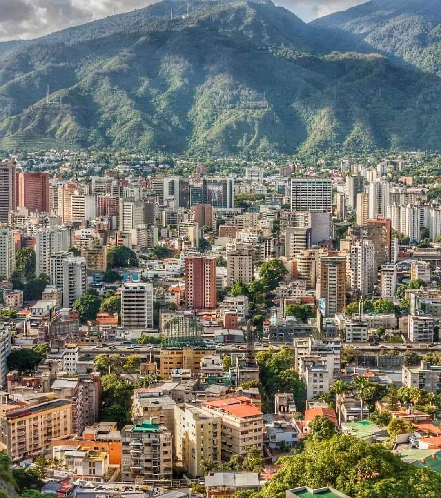

Home
Caracas, the capital of Venezuela, is a vibrant and bustling city nestled in a valley surrounded by the Ávila Mountain, which provides a stunning natural backdrop and a popular escape for hikers and outdoor lovers. As the country’s largest city and economic, political, and cultural center, Caracas is a mix of modern skyscrapers, historical landmarks, and dynamic street life.
Despite its challenges, Caracas is known for its rich history, passionate culture, and lively energy. The city is home to iconic sites like Plaza Bolívar, the historic heart of Caracas, and El Panteón Nacional, where national heroes, including Simón Bolívar, are buried. Universidad Central de Venezuela (UCV), a UNESCO World Heritage Site, is a masterpiece of modernist architecture designed by Carlos Raúl Villanueva.
Caracas has a strong cultural and gastronomic scene, with theaters, museums, and restaurants offering a taste of Venezuelan cuisine, including arepas, cachapas, and pabellón criollo. The Sabana Grande boulevard is a lively pedestrian street filled with shops, cafes, and street performers. For nature lovers, El Ávila National Park offers breathtaking views and a cable car (Teleférico de Caracas) that takes visitors to the top of the mountain.
Like many Latin American cities, Caracas has its share of social and economic difficulties, but its people—known for their warmth, resilience, and strong sense of community—continue to make it a fascinating and culturally rich place.